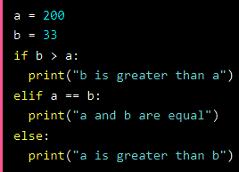

logical conditions from mathematics:- Equals: a == b
- Not Equals: a != b
- Less than: a < b
- Less than or equal to: a <= b
- Greater than: a > b
- Greater than or equal to: a >= b
Syntax
if conditon:
statement
elif condition:
statement
else:
statement

Short hand If in one line
if condition : statement

Short Hand If ... Else (Ternary Operators)
statement if condition else statement


And
The and keyword is a logical operator, and is used to combine conditional statements:

Or
The or keyword is a logical operator, and is used to combine conditional statements:

Not
The not keyword is a logical operator, and is used to reverse the result of the conditional statement:

Nested If

The pass Statement (Do Nothing)
if statements cannot be empty, but if you for some reason have an if statement with no, put in the pass statement to avoid getting an error.